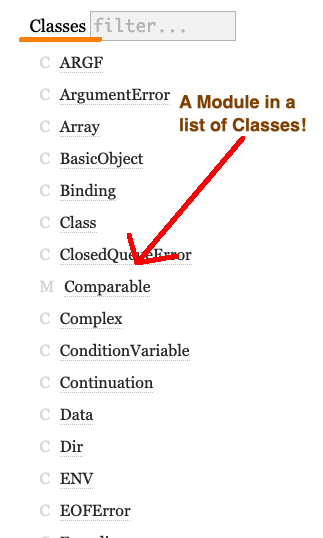

Ruby Modules: The When, Where, and How
Class v. Module
As nascent Rubyists begin to build simple and moderately-complex object-oriented applications, clarity on the purpose, usefulness, and features of Classes solidifies quickly. Not only are Classes at the very center of object-oriented programming, they are flexible enough that they could contain additional program code and methods that does not necessarily have to be directly related to the class or instances said Class was designed around.
The same cannot be said of Modules, although most beginners will at least have some familiarity with modules even if they have not identified certain Module methods as being Module-based.
Adding to the confusion is that Ruby's documentation itself does not bother to clearly separate modules from classes. Where does Ruby list its top open modules? Intermixed in its list of shared classes, of course!
But that word, 'intermixed', is the key to understanding the relationships between modules and classes. Whereas classes can certainly share their methods with each other through inheritance, Ruby's single inheritance constraint—that classes can only have one direct parent—limits how methods can be shared across different classes. That's where modules come in.
A few of those open modules, however, are useful to even the beginning Rubyist. The enumerables module provides a ton of instance methods that are useful for transforming data arranged in arrays and lists. The Comparable module contains mixins that extend our comparative capabilities beyond simple less than, greater than, and equal to. And the Math module contains mathematical constants, like Pi, and some operations based on mathematical theory such as sin or square roots. Those operations are housed in class methods, so they would be called directly on the module (i.e. Math.sqrt(4) #=> 2.0).
Defining 'Module'
Stepping away from the idea of a class for a moment, we should define module alone. At its most basic a Ruby module is a collection of constants and methods. A module is simply a library where constants and methods reside. These constants and methods can then be used within a program's defined classes through the concept of a 'mixin'.
The inherent limitation of a module is its inability to create an instance of itself. As we'll see below, module methods can still be utilized as instance methods when mixed in with a class. But by staying away from instance-generating capabilities, modules are a little more reliable and stagnant, which make them great for storing constants and housing methods that would need to be accessed by different models in an app, such as methods that encrypt passwords or methods that conduct similar operations across different models within the same app.
Prepend, Include, and Extend
There are keywords that allow us to mix a module's methods into a class. They are:
- Extend
- Prepend
- Include
When we extend a module into a class, its methods will become class methods.
module MyModule
def clarity
"This code is in the clarity method of MyModule"
end
end
class MyClass
prepend MyModule
def initialize(name)
@name = name
end
def clarity
"This code is in the clarity instance method of MyClass"
end
end
instance1 = MyClass.new(instance1)
MyClass.clarity # => 'This code is in the clarity method of MyModule'
instance1.clarity # => 'This code is in the clarity instance method of MyClass'
MyClass.ancestors.first # => MyClass
We see that, using the 'extend' keyword to introduce our Class to our Module, methods defined within our module become class methods in our class. Our instance methods remain unchanged. MyClass is listed as first in MyClass's ancestor list, as would be expected of most classes with no inheritance.
Next up: prepend
module MyModule
def clarity
"This code is in the clarity method of MyModule"
end
end
class MyClass
prepend MyModule
def initialize(name)
@name = name
end
def clarity
"this code is in the clarity instance method of MyClass"
end
end
instance1 = MyClass.new(instance1)
MyClass.clarity # => undefined method `clarity' for MyClass:Class
instance1.clarity # => this code is in the clarity method of MyClass
MyClass.ancestors.first(2) # => [MyModule, MyClass]
With the 'prepend' keyword, our module shares its methods as instance classes and overwrites any instance classes already located in our class. This is quite different from a class inheritance structure, where a method of a parent class would not overwrite the method in a child class. Our module is able to do this by forcing itself to position one in the ancestors list, even before the name of the class it was called upon!
And finally we come to including a module in a class.
module MyModule
def clarity
"This code is in the clarity method of MyModule"
end
def num
@num
end
def add_one
self.num + 1
end
end
class MyClass
include MyModule
def initialize(num)
@num = num
end
def clarity
"this code is in the clarity instance method of MyClass"
end
end
instance1 = MyClass.new(1)
MyClass.clarity # => undefined method `clarity' for MyClass:Class
instance1.clarity => this code is in the clarity instance method of MyClass
instance1.add_one => 2
MyClass.ancestors.first => MyClass
Again, calling our modules method as a class method results in a no method error, and, unlike with 'prepend', by using the 'include' keyword, our class's instance methods have priority over those in the module. However, we are able to call other module-based methods on our instances and can even use instance variables specific to our class within those methods. We can even house our getter and setter methods within the module.
Because Ruby goes up the family tree to find relevant instance methods when they are called, this is key to determining when to include a module verses when to prepend a module with a class. Extend is used for class methods only.
When Should We Incorporate Modules?
Moving beyond the obvious answer that we use modules such as Enumerables and Math on a day-to-day basis and that various standard support products such as ActiveRecord are themselves modules, modules should probably be used fairly sparingly in simple applications. While modules have the ability to DRY out code, mixing too many modules into classes for a small set of methods can add too much abstraction.
Is there a hint that we should be using a module rather than placing methods in classes? If code appears to be repetitive across our classes, then placing methods in a module could probably take their place. Another situation is if we have a set of methods that are not obviously related to a single class but have some kind of commonality (such as all our math functions), they probably belong in a module.